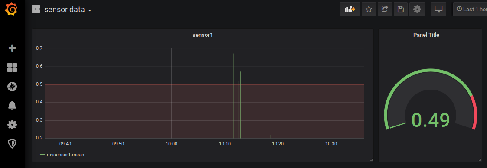

Chemistry scale-up labs tend to have multiple pieces of equipment connected to a single reactor. These items can work indepentently, co-dependently or fully-dependently with respect to each other. Automated reactors have been in existence for a number of years. These systems can generally collect and store data for a limited number of interfaces and typically work through wired connections. Here I’m documenting the first step towards a fully-functioning internet-of-things (IoT) lab so that multiple reactors can run processes that may be dependent on one another.
The final system should allow for the following:
- unidirectional and bidirectional communication
- software-managed PID control so that one input can be controlled by another output
- alarms and failsafes - raise an alarm when out of spec and provide the ability to return to a setpoint
- continual monitor of connection and checking for disconnect (drop leads to alarm and return to failsage)
- database to store measurements
- visualization to monitor data
I settled on a few hardware and software solutions to put this into effect. Much of the MQTT and database development was inspired by several thingsmatic blog entries
Hardware Solutions
Each instrument can be controlled by a small controller. The controller should be able to interface with the instrument and publish and receive data. It should run background code that allows it to react to received data. It should also communicate wirelessly via wifi and allow ssh communication. Obvious choice is the Raspberry Pi ZeroW but we could also consider the Adafruit Feather HUZZAH ESP8266 (a little more challenging to add ssh).
Software Solutions
I chose to implement MQTT as a protocol. It’s a lightweight messaging protocol that runs over TCP/IP. MQTT works by having clients publish messages through topics to a broker, which manages all the traffic. Clients can also subscribe to any topics, receiving messages from the broker as they arrive. This routes all messages through a central location as well as allowing clients to communicate with each other (via the broker). For IoT data received from multiple sources with time being a key piece of metadata a time series database (in this case InfluxDB) is a suitable choice for data storage. The data can then be displayed in real-time using grafana.
Test Sandbox
I used virtualbox to test the concept. Ultimately I created three ubuntu instances to mimic a server and two remote linux controllers.
Installing software
InfluxDB and grafana were installed to the server instance and MQTT was installed on the server as well as the two other virtual machines.
Installing InfluxDB
Add the InfluxData repository
wget -qO- https://repos.influxdata.com/influxdb.key | sudo apt-key add -
source /etc/lsb-release
echo "deb https://repos.influxdata.com/${DISTRIB_ID,,} ${DISTRIB_CODENAME} stable" | sudo tee /etc/apt/sources.list.d/influxdb.listInstall and start the InfluxDB service
sudo apt-get update && sudo apt-get install influxdb
sudo service influxdb startConfiguration file is located under /etc/influxdb/influxdb.conf
Most settings are commented out and take the default. Apply the following changes for a simple system:
# remove data-usage reporting
reporting-disabled = true
[http]
# Determines whether HTTP endpoint is enabled.
enabled = true
# The bind address used by the HTTP service.
bind-address = ":8086"
# Determines whether user authentication is enabled over HTTP/HTTPS.
auth-enabled = falseLaunch / relaunch with config file
influxd -config /etc/influxdb/influxdb.conf
sudo service influxd restart -config /etc/influxdb/influxdb.confTesting InfluxDB
$ influx -precision rfc3339 // starts the InfluxDB shell and shows time in rfc3339 format
Connected to http://localhost:8086 version 1.2.0
InfluxDB shell version: 1.2.0
> create database demo // Creates a new database
> use demo
Using database demo
> insert mysensor1 value=0.51 // Insert new datapoints
> insert mysensor1 value=0.53 // for the measurement
> insert mysensor1 value=0.45 // "mysensor1"
> select * from mysensor1 // Get the whole time series
name: mysensor1
time value
---- -----
2017-02-26T13:33:49.00279827Z 0.51
2017-02-26T13:33:53.045762633Z 0.53
2017-02-26T13:33:57.015427575Z 0.45Installing grafana
Add repository
sudo add-apt-repository "deb https://packages.grafana.com/oss/deb stable main"
wget -q -O - https://packages.grafana.com/gpg.key | sudo apt-key add -Install grafana
sudo apt-get update
sudo apt-get install grafanaStart service
sudo service grafana-server startTo start at bootup:
sudo update-rc.d grafana-server defaultsThe configuration file is found at /etc/grafana/grafana.ini and we’ll need to enable http protocol before use:
[server]
# Protocol (http, https, socket)
protocol = http
# The ip address to bind to, empty will bind to all interfaces
;http_addr =
# The http port to use
http_port = 3000Service can be relaunched with
sudo service grafana-server restartTesting grafana
Connect database Point browser to http://localhost:3000/ A getting-started guide can be found at https://grafana.com/docs/guides/getting_started/
log in (default = admin/admin) and click on “add data source” select InfluxDB as the source and then set the following parameters:
Name: InfluxDB
HTTP URL: http://10.0.2.15:8086 (obtained from ifconfig command)
Database name: demoCreate dashboard Dashboards can be built using “create dashboard”. Add a query that reads
Query: sensordata
FROM default mysensor1 WHERE
SELECT field(value) mean()The grafana time plot should show data from the Influx database, for example:

Installing MQTT
MQTT (MQ Telemetry Protocol) is a lightweight protocol for communication in IoT devices. In order to utilize it we must install Mosquitto, a message broker that implements the MQTT protocol. Mosquitto is lightweight and is suitable for use on all devices from low power single board computers to full servers.
Mosquitto is available in the Ubuntu repositories:
sudo apt-get install mosquitto
sudo apt-get install mosquitto-clients # Mosquitto cmd line clients (use via bash)Testing Mosquitto is running
service mosquitto statusRunning a test communication between two servers (command line)
In order to ensure that each VM has a separate IP address do the following:
- VirtualBox control Panel: File -> Preferences -> Network
- select NAT networks tab and create a new network called “NatNetwork”
- in each VM: Settings -> Network -> Attached to: change to “Nat Network” and select “NatNetwork” from the Name dropdown
- Restart all VMs
The following lines will create a subscriber on machine 1 which will listen for messages from machine 2 which have a topic starting with message followed by any other sub-topic. More details on how to use the protocol can be found at https://mosquitto.org/
machine 1 (ip address = 10.0.2.15)
mosquitto_sub -h 10.0.2.15 -t 'message/+' &
listens for message in background
machine 2 (ip address = 10.0.2.4)
mosquitto_pub -h 10.0.2.15 -t 'message/my_comp' -m 'Hi there'
Publish message
If all works well machine 1 should display ‘Hi there’ each time the mosquitto_pub command is run.